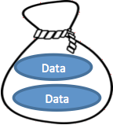
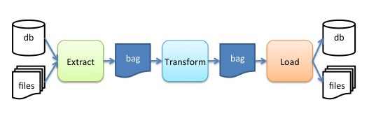
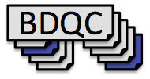
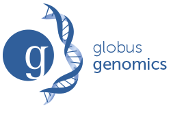
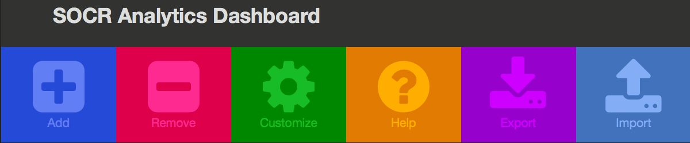
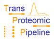
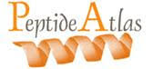

Applying Big Data Tools to Accelerate Scientific Knowledge Turns
|
What is BDDS? BDDS is a NIH Center of Excellence developing new approaches, methods, software tools, and related resources for advancing Big Data science in the context of biomedical research. |
|
Tutorials |
| Minid
Lightweight, globally unique identifiers for data products. |
|
|  | SciBag Tools
A set of tools for building and working with "SciBags", which are sets data files bundeled together using a hierarchical file packaging format based on the Library of Congress' "BagIt" format. |
|  | IObox
A collection of Extract, Transform, Load (ETL) utilities for ERMrest+Hatrac |
| graphic | ERMrest
A general relational data storage service for web-based, data-oriented collaboration |
|  | BDQC
An extensible Python3 framework for context-agnostic file-based data validation |
|  | BDDS Globus Genomics
BDDS Globus Genomics provides a platform for Cloud-based Informatics Processing. |
| PANTHER
A Classification System designed to classify proteins and their genes to facilitate high-throughput analysis. |
|
|  | SOCR Analytics Dashboard
SOCR Analytics Dashboard combines and integrates multiple socioeconomic and medical datasets using big data analytics, in order to provide a lightweight, scalable platform for drawing inferences related to medical care, sociology, and economy in the United States. |
| LONI Pipeline
A Workflow application primarily aimed at computational scientists. |
|
| Globus
Globus gives researchers everywhere access to a fast, powerful data management service that's easy to use. |
|  | Trans-Proteomic Pipeline
The Trans-Proteomic Pipeline (TPP) includes all of the steps of the ISB MS/MS analysis pipeline. |
|  | Peptide Atlas
PeptideAtlas is a multi-organism, publicly accessible compendium of peptides identified in a large set of tandem mass spectrometry proteomics experiments. |